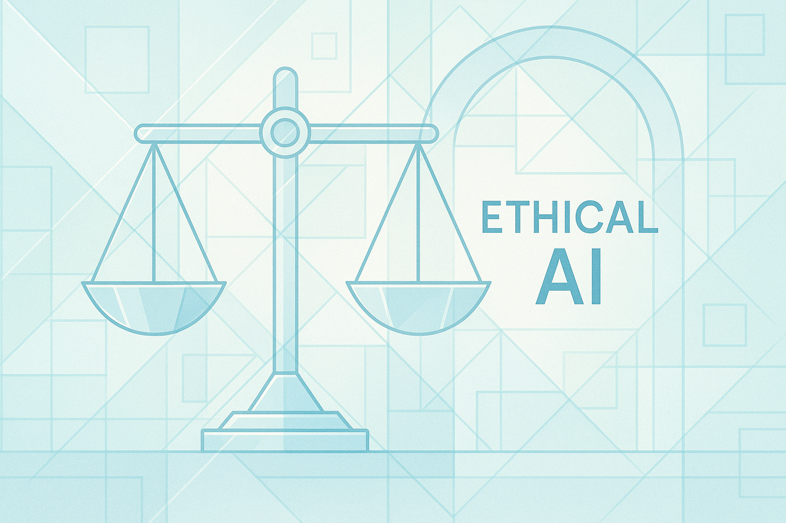

Slide 5: Task 1 Overview - Ethical and Responsible AI Practices
Addressing ethical challenges in AI implementation requires systematic approaches to bias mitigation, transparency, and compliance frameworks

Ethical AI implementation encompasses three interconnected dimensions that organizations must address systematically. Bias mitigation requires proactive identification and correction of algorithmic discrimination throughout the AI lifecycle. Transparency and explainability ensure stakeholders understand how AI systems make decisions, building trust and enabling accountability. Compliance frameworks provide structured approaches to implementing ethical standards through established tools and methodologies. These dimensions are not isolated concerns but integrated components of responsible AI governance. Organizations that excel in ethical AI practices recognize that technical solutions must be complemented by organizational policies, stakeholder engagement, and continuous improvement processes. The following slides examine each dimension in detail, providing strategic guidance and practical examples.
Rubric Criteria Addressed (Detailed Explanation)
1. Bias Mitigation Strategies: This section introduces the necessity of identifying and correcting algorithmic discrimination, setting the stage for a detailed discussion on pre-processing, in-processing, and post-processing intervention frameworks in subsequent slides.
2. Transparency and Explainability in AI: This criterion is addressed by highlighting the role of transparency in building stakeholder trust and enabling accountability, which is a core theme of the following slides on Explainable AI (XAI).
3. Ethical Compliance Frameworks and Tools: The overview mentions that compliance frameworks provide structured approaches to implementing ethical standards, which will be elaborated upon with specific examples like GDPR and HIPAA in later slides. This establishes the organizational and regulatory context for the technical solutions.